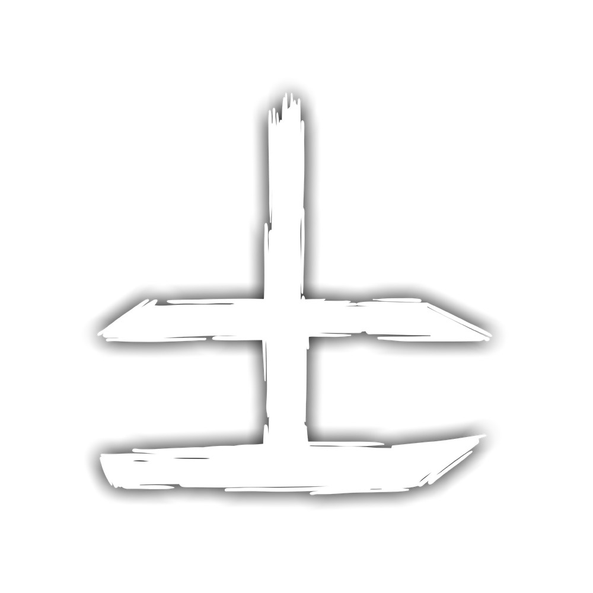

Entidade primordial do sentimento

O Sangue é a entidade do sentimento. Ele busca a intensidade: dor, obsessão, paixão, amor, fome e ódio — tudo que envolve sentir uma emoção extrema agrada a entidade de Sangue.
A entidade se fortalece através de emoções intensas e experiências extremas que ultrapassam os limites da razão.